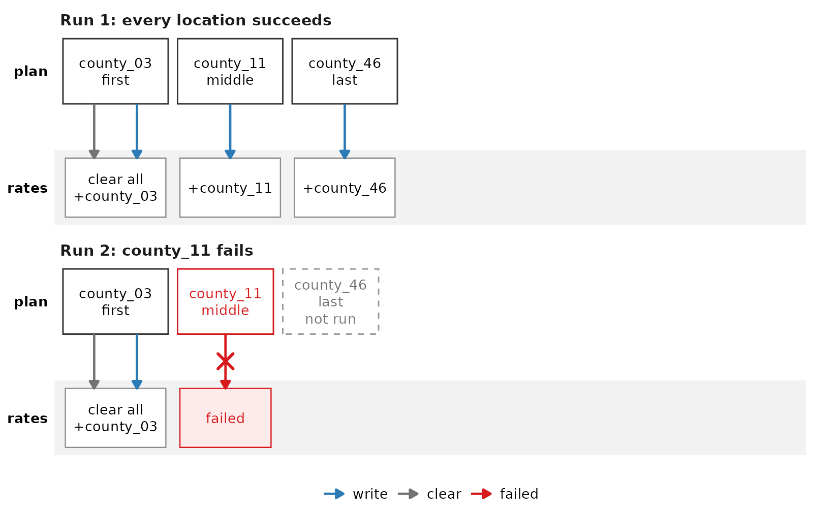
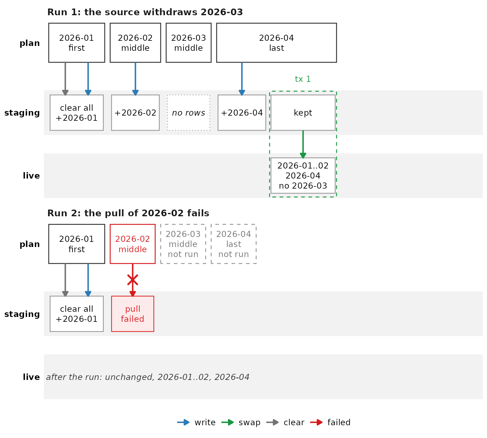
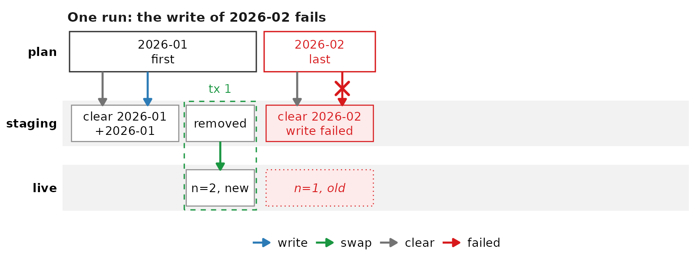
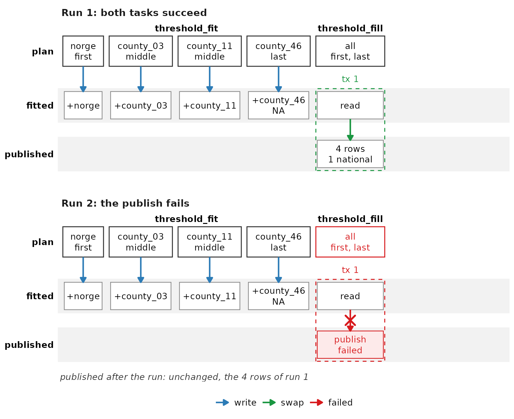
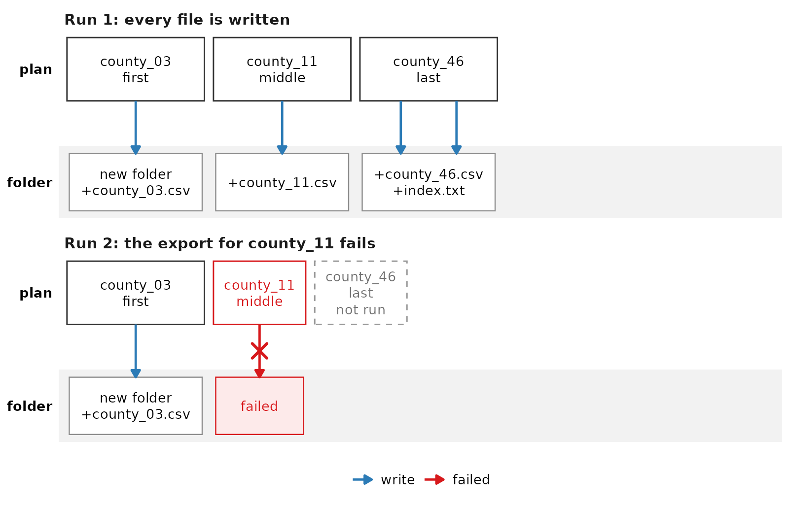
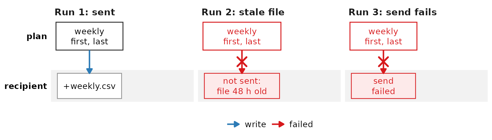

A task shape is a plan design that recurs across tasks. It fixes how
the plans split the work, what the first and the last plan do, and how
the task writes. This vignette describes seven shapes. Each shape runs
against SQLite when the vignette builds. A chunk calls
stop() if a shape does not keep its promise, so the build
fails. vignette("how-a-task-runs") states the execution
rules that every shape follows.
| Shape | Use it when |
|---|---|
| Per-unit rebuild | the rows of each unit depend only on its own data pull, and no reader needs the table during the run |
| Staged import | an import replaces the weeks of a run, and the live table MUST change only when every week arrived |
| Per-plan staged swap | each plan pulls one unit, and a reader MAY see units from different runs |
| Staging as a checkpoint | an import is long, and a failed run MUST NOT lose the weeks that it already pulled |
| Fit then fill | a fit can fail for one unit, and the fallback needs the results of all units |
| Export from a finished table | the output is files, made from tables that an earlier task finished |
| Notify after export | a finished export wrote the output, and a task sends it on without computing anything |
Setup
CS9 reads its database configuration from environment variables. This
chunk points the config and anon access levels
at two SQLite files under tempdir().
library(data.table)
db_dir <- file.path(tempdir(), "cs9-task-shapes")
unlink(db_dir, recursive = TRUE)
dir.create(db_dir)
Sys.setenv(
CS9_AUTO = "0",
CS9_PATH = db_dir,
CS9_DBCONFIG_ACCESS = "config/anon",
CS9_DBCONFIG_DRIVER = "SQLite",
CS9_DBCONFIG_DB_CONFIG = file.path(db_dir, "config.sqlite"),
CS9_DBCONFIG_DB_ANON = file.path(db_dir, "anon.sqlite")
)
cs9::reload_db_config()
ss <- cs9::SurveillanceSystem_v9$new(name = "shapes")
# The rows of a table as a data.frame, sorted by the columns in `by`.
read_rows <- function(table, by) {
d <- as.data.frame(dplyr::collect(table$tbl()))
d <- d[do.call(order, d[by]), , drop = FALSE]
rownames(d) <- NULL
d
}
# Values quoted for an SQL IN list.
sql_in <- function(x) paste(DBI::dbQuoteString(DBI::ANSI(), x), collapse = ", ")Each example calls record() at each step that a plan
does to a table. The diagram after the example draws those steps. A
hidden chunk defines record() and the diagram code. It
stops the build when the recorded steps differ from what the example
checks.
In a diagram, the top row holds the plans in the order that they run. Each lane below it is one table, the output folder, or the recipient of a message. Read the arrows as follows:
- A grey arrow clears rows. A blue arrow writes rows or files, or sends a file.
- A green arrow in a dashed box is a swap: one transaction that writes rows from the upper table into the lower table.
- A red arrow with a cross marks a step that failed. Its plan has a red box.
- A plan with a dashed grey box did not run.
Per-unit rebuild
The task has one plan per unit, for example a location or a partition. The first analysis empties the output table. Each analysis then inserts the rows of its own unit.
- Use it when the rows of each unit depend only on the data pull of that unit, and nothing reads the output during the run.
- Do not use it when a reader MUST see a complete table at every moment. Use fit then fill, which publishes in one transaction.
- Failure modes. A failed run leaves the table partial until the next run succeeds. Only the first plan MAY empty the table, because the middle plans MAY run in parallel, in any order (rule). With a partitioned output, one plan per partition writes only its own partition.
ss$add_table(
name_access = "anon",
name_grouping = "rebuild",
name_variant = "rates",
field_types = c(location_code = "TEXT", rate_per_1000 = "DOUBLE"),
keys = "location_code"
)
counts <- data.table(
location_code = c("county_03", "county_11", "county_46"),
cases = c(30L, 12L, 7L),
pop = c(700L, 600L, 650L)
)
rebuild <- new.env()
rebuild$fail <- NA_character_
rebuild$log <- new_log("rates")
rebuild_data <- function(argset, tables) {
list(counts = counts[location_code == argset$location_code])
}
rebuild_action <- function(data, argset, tables) {
loc <- argset$location_code
if (argset$first_analysis) {
tables$rates$drop_all_rows()
record(rebuild$log, loc, "clear", "rates", label = "clear all")
}
if (identical(loc, rebuild$fail)) {
record(rebuild$log, loc, "write", "rates", ok = FALSE, label = "failed")
stop("the computation failed for ", rebuild$fail)
}
tables$rates$insert_data(
data$counts[, .(location_code, rate_per_1000 = 1000 * cases / pop)]
)
record(rebuild$log, loc, "write", "rates", label = paste0("+", loc))
}
ss$add_task(
name_grouping = "rebuild",
name_action = "rates",
for_each_plan = plnr::expand_list(location_code = counts$location_code),
data_selector_fn_name = "rebuild_data",
action_fn_name = "rebuild_action",
tables = list(rates = ss$tables$anon_rebuild_rates)
)The first run writes all 3 locations. The second run fails at the second location. The table then holds only the first location, and a reader sees that partial table until a run succeeds.
log_run(rebuild$log, "Run 1: every location succeeds", counts$location_code)
ss$run_task("rebuild_rates")
full <- read_rows(ss$tables$anon_rebuild_rates, "location_code")
rebuild$fail <- "county_11"
log_run(rebuild$log, paste("Run 2:", rebuild$fail, "fails"), counts$location_code)
run <- tryCatch(ss$run_task("rebuild_rates"), error = function(e) e)
partial <- read_rows(ss$tables$anon_rebuild_rates, "location_code")
stopifnot(
identical(full$location_code, counts$location_code),
inherits(run, "error"),
identical(partial$location_code, "county_03")
)
partial[c("location_code", "rate_per_1000")]
#> location_code rate_per_1000
#> 1 county_03 42.85714
Staged import
The import task has one plan per week. Each argset copies its week
from the source into a staging table. The argset with
first_analysis = TRUE empties the staging table first. The
argset with last_analysis = TRUE checks the staged rows. It
then swaps them into the live table in one transaction.
- Use it when a run replaces a set of weeks. A reader of the live table then sees either the old weeks or the new weeks, never a mix.
- Do not use it when a run is long enough that a failure near the end costs a night of pulls. The first plan empties staging, so the next run pulls every week again. Use staging as a checkpoint.
- Failure modes. Only the last plan MAY check and swap, because the middle plans MAY run in parallel, in any order (rule). A partitioned staging table MUST hold a week in every declared partition before the week counts as staged (rule).
weeks <- c("2026-01", "2026-02", "2026-03", "2026-04")
import_fields <- c(isoyearweek = "TEXT", location_code = "TEXT", n = "INTEGER")
for (variant in c("staging", "live")) {
ss$add_table(
name_access = "anon",
name_grouping = "import",
name_variant = variant,
field_types = import_fields,
keys = c("isoyearweek", "location_code")
)
}
source_counts <- data.table(
isoyearweek = rep(weeks, each = 2),
location_code = c("county_03", "county_11"),
n = 1:8
)
fail_week <- NA_character_
import_log <- new_log(c("staging", "live"))
import_data <- function(argset, tables) {
list(counts = source_counts[isoyearweek == argset$isoyearweek])
}
import_action <- function(data, argset, tables) {
week <- argset$isoyearweek
if (argset$first_analysis) {
tables$staging$drop_all_rows()
record(import_log, week, "clear", "staging", label = "clear all")
}
if (identical(week, fail_week)) {
record(import_log, week, "write", "staging", ok = FALSE, label = "pull\nfailed")
stop("the source failed for ", fail_week)
}
if (nrow(data$counts) > 0) {
tables$staging$insert_data(data$counts)
record(import_log, week, "write", "staging", label = paste0("+", week))
} else {
record(import_log, week, "note", "staging", label = "no rows")
}
if (argset$last_analysis) swap_into_live(tables, argset$weeks, week)
}
# Deletes every week of the run from the live table, not only the weeks that
# reached staging, and appends the staged rows. One transaction holds both.
swap_into_live <- function(tables, weeks, plan_week) {
staged <- dplyr::collect(tables$staging$tbl())
stopifnot(all(staged$isoyearweek %in% weeks), !anyNA(staged$n))
live <- tables$live
con <- live$dbconnection$autoconnection
run_weeks <- paste(DBI::dbQuoteString(con, weeks), collapse = ", ")
DBI::dbWithTransaction(con, {
DBI::dbExecute(con, paste0(
"DELETE FROM ", live$table_name_fully_specified_text,
" WHERE isoyearweek IN (", run_weeks, ")"
))
DBI::dbAppendTable(
con,
live$table_name_short_for_mssql_fully_specified_for_postgres,
staged
)
})
gone <- setdiff(weeks, staged$isoyearweek)
record(
import_log, plan_week, "swap", "live",
label = paste(c(weeks_text(staged$isoyearweek, "\n"), paste("no", gone)), collapse = "\n"),
from_label = "kept"
)
}
ss$add_task(
name_grouping = "import",
name_action = "weekly",
for_each_plan = lapply(weeks, function(w) list(isoyearweek = w)),
universal_argset = list(weeks = weeks),
data_selector_fn_name = "import_data",
action_fn_name = "import_action",
tables = list(
staging = ss$tables$anon_import_staging,
live = ss$tables$anon_import_live
)
)The live table holds an earlier run of all 4 weeks. The source then withdraws week 2026-03, so no row for that week reaches staging. After the run, the live table MUST hold exactly the staged rows, and no row for 2026-03.
ss$tables$anon_import_live$insert_data(
data.table(isoyearweek = weeks, location_code = "county_03", n = 99L)
)
source_counts <- source_counts[isoyearweek != "2026-03"]
log_run(import_log, "Run 1: the source withdraws 2026-03", weeks)
ss$run_task("import_weekly")
live <- read_rows(ss$tables$anon_import_live, c("isoyearweek", "location_code"))
staged <- read_rows(ss$tables$anon_import_staging, c("isoyearweek", "location_code"))
stopifnot(identical(live, staged), !"2026-03" %in% live$isoyearweek)
live[names(import_fields)]
#> isoyearweek location_code n
#> 1 2026-01 county_03 1
#> 2 2026-01 county_11 2
#> 3 2026-02 county_03 3
#> 4 2026-02 county_11 4
#> 5 2026-04 county_03 7
#> 6 2026-04 county_11 8The second run reads new counts, and week 2026-02 fails. The task MUST stop with an error, and the live table MUST keep the rows of the first run.
source_counts[, n := n + 100L]
fail_week <- "2026-02"
log_run(import_log, paste("Run 2: the pull of", fail_week, "fails"), weeks)
run <- tryCatch(ss$run_task("import_weekly"), error = function(e) e)
stopifnot(
inherits(run, "error"),
identical(
read_rows(ss$tables$anon_import_live, c("isoyearweek", "location_code")),
live
)
)
conditionMessage(run)
#> [1] "the source failed for 2026-02"
cat("STAGED IMPORT CHECKS PASSED\n")
#> STAGED IMPORT CHECKS PASSED
Per-plan staged swap
The task has one plan per unit, for example a week. Each plan pulls its unit and writes it to staging. The same plan then swaps that unit into the live table in its own transaction. No plan depends on another plan.
- Use it when each unit is complete in one plan, and a reader MAY see units from different runs in the live table.
- Do not use it when the live table MUST change only when every unit arrived. Use a staged import. Use staging as a checkpoint when a unit needs several plans. There only the last plan swaps.
- Failure modes. A failed plan leaves its own unit unchanged in the live table, so that unit is stale until the next run. The units of the plans that finished hold the new rows. A plan that did not run, for example after the task stopped, also leaves its unit stale. A plan MUST remove only its own unit from staging, because the other plans MAY run in parallel.
for (variant in c("staging", "live")) {
ss$add_table(
name_access = "anon",
name_grouping = "pps",
name_variant = variant,
field_types = c(isoyearweek = "TEXT", n = "INTEGER"),
keys = "isoyearweek"
)
}
pps_weeks <- c("2026-01", "2026-02")
pps <- new.env()
pps$fail_week <- NA_character_
pps$log <- new_log(c("staging", "live"))
pps_data <- function(argset, tables) {
list(rows = data.table(isoyearweek = argset$isoyearweek, n = 2L))
}
pps_action <- function(data, argset, tables) {
week <- argset$isoyearweek
tables$staging$drop_rows_where(paste0("isoyearweek = ", sql_in(week)))
record(pps$log, week, "clear", "staging", label = paste("clear", week))
if (identical(week, pps$fail_week)) {
record(pps$log, week, "write", "staging", ok = FALSE, label = "write failed")
stop("the write to staging failed for ", pps$fail_week)
}
tables$staging$insert_data(data$rows)
record(pps$log, week, "write", "staging", label = paste0("+", week))
pps_swap(tables, week)
record(
pps$log, week, "swap", "live",
label = paste0("n=", data$rows$n, ", new"), from_label = "removed"
)
}
# One transaction deletes the week from the live table, copies it from
# staging and removes it from staging.
pps_swap <- function(tables, week) {
tables$live$connect()
con <- tables$live$dbconnection$autoconnection
live_name <- tables$live$table_name_fully_specified_text
staging_name <- tables$staging$table_name_fully_specified_text
where <- paste0(" WHERE isoyearweek = ", sql_in(week))
DBI::dbWithTransaction(con, {
DBI::dbExecute(con, paste0("DELETE FROM ", live_name, where))
DBI::dbExecute(con, paste0(
"INSERT INTO ", live_name, " SELECT * FROM ", staging_name, where
))
DBI::dbExecute(con, paste0("DELETE FROM ", staging_name, where))
})
}
ss$add_task(
name_grouping = "pps",
name_action = "import",
for_each_plan = plnr::expand_list(isoyearweek = pps_weeks),
data_selector_fn_name = "pps_data",
action_fn_name = "pps_action",
tables = list(
staging = ss$tables$anon_pps_staging,
live = ss$tables$anon_pps_live
)
)The live table holds both weeks with n = 1 from an
earlier run. The run writes n = 2, and the write of week
2026-02 fails. Week 2026-01 MUST hold the new rows, and week 2026-02
MUST hold the old rows.
ss$tables$anon_pps_live$insert_data(data.table(isoyearweek = pps_weeks, n = 1L))
pps$fail_week <- "2026-02"
log_run(pps$log, paste("One run: the write of", pps$fail_week, "fails"), pps_weeks)
run <- tryCatch(ss$run_task("pps_import"), error = function(e) e)
live <- read_rows(ss$tables$anon_pps_live, "isoyearweek")
stopifnot(
inherits(run, "error"),
identical(live$isoyearweek, pps_weeks),
all(live$n == c(2L, 1L))
)
live[c("isoyearweek", "n")]
#> isoyearweek n
#> 1 2026-01 2
#> 2 2026-02 1
Staging as a checkpoint
The import has one plan per week. A run imports the refresh weeks, which MUST always be fresh, and every week of each selected unit. Here the unit is the isoyear. The staging table keeps the weeks of a failed run, so the next run does not pull them again.
- The planner selects each unit that the live table does not hold completely. It plans the refresh weeks, and every week of a selected unit that staging does not hold.
- The first plan removes only the refresh weeks from staging.
- Each plan pulls its week and writes it to staging.
- The last plan swaps the refresh weeks into the live table. It then swaps each unit whose weeks are all in staging. One transaction per swap deletes the weeks from the live table, copies them from staging and removes them from staging.
- Use it when an import runs for hours, and a failure part way MUST NOT cost the weeks that the run already pulled.
- Do not use it when one run is short. A staged import is simpler.
- Failure modes. The first plan MUST NOT empty staging, or the next run loses its checkpoint. Only the last plan MAY swap, because no middle plan knows which other weeks are staged (rule). With partitioned tables, a week counts as staged only when every declared partition holds it (rule). A plan holds one week in memory, and the swap copies the rows inside the database.
ckpt_fields <- c(isoyear = "INTEGER", isoyearweek = "TEXT", n = "INTEGER")
for (variant in c("staging", "live")) {
ss$add_table(
name_access = "anon",
name_grouping = "ckpt",
name_variant = variant,
field_types = ckpt_fields,
keys = "isoyearweek"
)
}
refresh_weeks <- c("2026-01", "2026-02")
unit_weeks <- list(
"2024" = c("2024-01", "2024-02", "2024-03"),
"2025" = c("2025-01", "2025-02", "2025-03")
)
ckpt <- new.env()
ckpt$fail_week <- NA_character_
ckpt$pulled <- character(0)
ckpt$swapped <- character(0)
ckpt$log <- new_log(c("staging", "live"))
weeks_in <- function(table) {
dplyr::pull(dplyr::distinct(table$tbl(), isoyearweek))
}
ckpt_plan_analysis <- function(argset, tables) {
live <- weeks_in(tables$live)
staged <- weeks_in(tables$staging)
units <- names(unit_weeks)[
vapply(unit_weeks, function(w) !all(w %in% live), logical(1))
]
to_pull <- setdiff(unlist(unit_weeks[units], use.names = FALSE), staged)
log_plans(ckpt$log, c(refresh_weeks, to_pull))
list(
for_each_plan = plnr::expand_list(isoyearweek = c(refresh_weeks, to_pull)),
# One text value each, so every analysis gets the whole list.
for_each_analysis = plnr::expand_list(
refresh = paste(refresh_weeks, collapse = ","),
units = paste(units, collapse = ",")
)
)
}
ckpt_data <- function(argset, tables) {
ckpt$pulled <- c(ckpt$pulled, argset$isoyearweek)
list(rows = data.table(
isoyear = as.integer(substr(argset$isoyearweek, 1, 4)),
isoyearweek = argset$isoyearweek,
n = 10L
))
}
ckpt_action <- function(data, argset, tables) {
week <- argset$isoyearweek
refresh <- strsplit(argset$refresh, ",")[[1]]
if (argset$first_analysis) {
tables$staging$drop_rows_where(paste0("isoyearweek IN (", sql_in(refresh), ")"))
record(ckpt$log, week, "clear", "staging", label = "clear\nrefresh")
}
if (identical(week, ckpt$fail_week)) {
record(ckpt$log, week, "write", "staging", ok = FALSE, label = "pull\nfailed")
stop("the source failed for ", ckpt$fail_week)
}
tables$staging$insert_data(data$rows)
record(ckpt$log, week, "write", "staging", label = paste0("+", week))
if (argset$last_analysis) {
ckpt_swap(tables, refresh, strsplit(argset$units, ",")[[1]], week)
}
}
# One transaction for the refresh weeks, and one for each complete unit.
ckpt_swap <- function(tables, refresh, units, week) {
staged <- weeks_in(tables$staging)
batches <- c(list(refresh = refresh), unit_weeks[units])
tables$live$connect()
con <- tables$live$dbconnection$autoconnection
live_name <- tables$live$table_name_fully_specified_text
staging_name <- tables$staging$table_name_fully_specified_text
for (b in names(batches)) {
# A unit with a week missing from staging waits for the next run.
if (!all(batches[[b]] %in% staged)) next
where <- paste0(" WHERE isoyearweek IN (", sql_in(batches[[b]]), ")")
DBI::dbWithTransaction(con, {
DBI::dbExecute(con, paste0("DELETE FROM ", live_name, where))
DBI::dbExecute(con, paste0(
"INSERT INTO ", live_name, " SELECT * FROM ", staging_name, where
))
DBI::dbExecute(con, paste0("DELETE FROM ", staging_name, where))
})
ckpt$swapped <- c(ckpt$swapped, b)
record(
ckpt$log, week, "swap", "live",
label = paste0(b, "\n", length(batches[[b]]), " weeks"), from_label = "removed"
)
}
}
ss$add_task(
name_grouping = "ckpt",
name_action = "import",
plan_analysis_fn_name = "ckpt_plan_analysis",
data_selector_fn_name = "ckpt_data",
action_fn_name = "ckpt_action",
tables = list(
staging = ss$tables$anon_ckpt_staging,
live = ss$tables$anon_ckpt_live
)
)The live table holds the refresh weeks of an earlier run. The first run fails at week 2025-02, after it staged every week of 2024. The live table MUST be unchanged.
ss$tables$anon_ckpt_live$insert_data(
data.table(isoyear = 2026L, isoyearweek = refresh_weeks, n = 99L)
)
live_before <- read_rows(ss$tables$anon_ckpt_live, "isoyearweek")
ckpt$fail_week <- "2025-02"
log_run(ckpt$log, paste("Run 1: the pull of", ckpt$fail_week, "fails"))
run <- tryCatch(ss$run_task("ckpt_import"), error = function(e) e)
stopifnot(
inherits(run, "error"),
identical(read_rows(ss$tables$anon_ckpt_live, "isoyearweek"), live_before),
all(unit_weeks[["2024"]] %in% weeks_in(ss$tables$anon_ckpt_staging))
)
staged_after_fail <- sort(weeks_in(ss$tables$anon_ckpt_staging))
staged_after_fail
#> [1] "2024-01" "2024-02" "2024-03" "2025-01" "2026-01" "2026-02"The second run pulls the refresh weeks and the 2 missing weeks of 2025, and no week of 2024. Its last plan swaps the refresh weeks and both units. Staging is then empty.
ckpt$fail_week <- NA_character_
ckpt$pulled <- character(0)
ckpt$swapped <- character(0)
log_run(ckpt$log, "Run 2: resumes from staging")
ss$run_task("ckpt_import")
live_after <- read_rows(ss$tables$anon_ckpt_live, "isoyearweek")
all_weeks <- c(unlist(unit_weeks, use.names = FALSE), refresh_weeks)
stopifnot(
setequal(ckpt$pulled, c(refresh_weeks, "2025-02", "2025-03")),
identical(ckpt$swapped, c("refresh", "2024", "2025")),
setequal(live_after$isoyearweek, all_weeks),
all(live_after$n == 10L),
length(weeks_in(ss$tables$anon_ckpt_staging)) == 0
)
list(pulled = ckpt$pulled, swapped = ckpt$swapped)
#> $pulled
#> [1] "2026-01" "2026-02" "2025-02" "2025-03"
#>
#> $swapped
#> [1] "refresh" "2024" "2025"![Diagram of two runs of the staging checkpoint, with a staging lane and a live lane. In run 1 the first plan clears the refresh weeks from staging, and 6 plans write their week to staging. The pull of 2025-02 fails, and the last plan, 2025-03, does not run. Staging keeps the weeks that run 1 wrote, and the live table is unchanged. Run 2 plans only the refresh weeks and the 2 missing weeks of 2025. Its last plan swaps the refresh weeks, the unit 2024 and the unit 2025 into the live table, in 3 transactions that each remove their weeks from staging.](task-shapes_files/figure-html/checkpoint-diagram-1.png)
Fit then fill
The fit task fits a threshold for each stratum in its own argset. It
writes NA for a stratum with fewer than 4 weeks of history.
The fill task has one plan. It fills each NA row from the
national row, records the source of each threshold, and
publishes the whole result with
csdb::DBTable_v9$replace_all_rows().
- Use it when a fit can fail for one unit, and its fallback needs the result of another unit, here the national row.
- Do not use it when every unit has a valid result of its own. A per-unit rebuild is then enough.
- Failure modes. A middle plan of the fit task MUST NOT fill, because the national row MAY not exist yet (rule). The fill reads the whole fitted table in one pull, so the fitted table MUST stay small. The published table changes in one transaction, so a failed fill leaves the previous thresholds.
ss$add_table(
name_access = "anon",
name_grouping = "threshold",
name_variant = "fitted",
field_types = c(location_code = "TEXT", threshold = "DOUBLE"),
keys = "location_code"
)
ss$add_table(
name_access = "anon",
name_grouping = "threshold",
name_variant = "published",
field_types = c(location_code = "TEXT", threshold = "DOUBLE", source = "TEXT"),
keys = "location_code"
)
history <- data.table(
location_code = rep(
c("norge", "county_03", "county_11", "county_46"),
times = c(8, 8, 8, 2)
),
n = c(
rep(c(40L, 44L, 38L, 46L), 2),
rep(c(10L, 12L, 9L, 14L), 2),
rep(c(20L, 25L, 18L, 22L), 2),
c(3L, 4L)
)
)
break_publish <- FALSE
fit_log <- new_log(c("fitted", "published"))
fit_data <- function(argset, tables) {
list(history = history[location_code == argset$location_code])
}
fit_action <- function(data, argset, tables) {
loc <- argset$location_code
n <- data$history$n
threshold <- if (length(n) >= 4) mean(n) + 2 * sd(n) else NA_real_
tables$fitted$upsert_data(
data.table(location_code = loc, threshold = threshold)
)
record(
fit_log, loc, "write", "fitted", task = "threshold_fit",
label = paste0("+", loc, if (is.na(threshold)) "\nNA" else "")
)
}
fill_data <- function(argset, tables) {
list(fitted = as.data.table(dplyr::collect(tables$fitted$tbl())))
}
fill_action <- function(data, argset, tables) {
d <- copy(data$fitted)
national <- d[location_code == "norge", threshold]
d[, source := fifelse(is.na(threshold), "national", "fitted")]
d[is.na(threshold), threshold := national]
# A duplicate key makes the publish fail on purpose.
if (break_publish) d <- rbind(d, d[1])
# Records a failed publish, and lets the error reach cs9.
withCallingHandlers(
tables$published$replace_all_rows(d),
error = function(e) {
record(fit_log, "all", "swap", "published", ok = FALSE, label = "publish\nfailed",
task = "threshold_fill", from_label = "read")
}
)
record(
fit_log, "all", "swap", "published", task = "threshold_fill", from_label = "read",
label = paste0(nrow(d), " rows\n", sum(d$source == "national"), " national")
)
}
ss$add_task(
name_grouping = "threshold",
name_action = "fit",
for_each_plan = lapply(unique(history$location_code), function(x) {
list(location_code = x)
}),
data_selector_fn_name = "fit_data",
action_fn_name = "fit_action",
tables = list(fitted = ss$tables$anon_threshold_fitted)
)
ss$add_task(
name_grouping = "threshold",
name_action = "fill",
for_each_plan = list(list()),
data_selector_fn_name = "fill_data",
action_fn_name = "fill_action",
tables = list(
fitted = ss$tables$anon_threshold_fitted,
published = ss$tables$anon_threshold_published
)
)After both tasks run, every published row MUST have a threshold and a source. County 46 MUST carry the national threshold.
log_run(
fit_log, "Run 1: both tasks succeed",
threshold_fit = unique(history$location_code), threshold_fill = "all"
)
ss$run_task("threshold_fit")
ss$run_task("threshold_fill")
published <- read_rows(ss$tables$anon_threshold_published, "location_code")
stopifnot(
!anyNA(published$threshold),
!anyNA(published$source),
published$source[published$location_code == "county_46"] == "national"
)
published[c("location_code", "threshold", "source")]
#> location_code threshold source
#> 1 county_03 15.35575 fitted
#> 2 county_11 26.77914 fitted
#> 3 county_46 48.76123 national
#> 4 norge 48.76123 fittedThe history then doubles, and the fit runs again. The publish of the fill task fails. The published table MUST keep its previous contents.
history[, n := 2L * n]
log_run(
fit_log, "Run 2: the publish fails",
threshold_fit = unique(history$location_code), threshold_fill = "all"
)
ss$run_task("threshold_fit")
break_publish <- TRUE
run <- tryCatch(ss$run_task("threshold_fill"), error = function(e) e)
stopifnot(
inherits(run, "error"),
identical(read_rows(ss$tables$anon_threshold_published, "location_code"), published)
)
conditionMessage(run)
#> [1] "UNIQUE constraint failed: anon_threshold_published.location_code"
cat("FIT THEN FILL CHECKS PASSED\n")
#> FIT THEN FILL CHECKS PASSED
Export from a finished table
The task reads tables that an earlier task finished, and writes files. It has one plan per output file, for example per location or per week. The first plan creates the folder. The last plan writes what needs every file, here an index, and checks that every expected file exists.
- Use it when the output is files, and the scheduler runs the task after the tasks that write its input tables.
- Do not use it when an input table can change during the export, for example a per-unit rebuild that runs at the same time.
-
Failure modes. Do not catch an error in the action
only to print it.
Task$run()then records the task as succeeded, with a file missing. Plans that run in parallel MUST write to different file names. A step that needs every file MUST run in the last plan (rule).
ss$add_table(
name_access = "anon",
name_grouping = "export",
name_variant = "source",
field_types = c(location_code = "TEXT", isoyearweek = "TEXT", n = "INTEGER"),
keys = c("location_code", "isoyearweek")
)
ss$tables$anon_export_source$insert_data(data.table(
location_code = rep(c("county_03", "county_11", "county_46"), each = 2),
isoyearweek = c("2026-01", "2026-02"),
n = 1:6
))
export_locations <- c("county_03", "county_11", "county_46")
export <- new.env()
export$broken <- NA_character_
export$log <- new_log("folder")
export_data <- function(argset, tables) {
list(rows = dplyr::collect(dplyr::filter(
tables$source$tbl(),
location_code == !!argset$location_code
)))
}
export_action <- function(data, argset, tables) {
loc <- argset$location_code
if (argset$first_analysis) {
dir.create(argset$folder, recursive = TRUE)
record(export$log, loc, "note", "folder", label = "new folder")
}
if (identical(loc, export$broken)) {
record(export$log, loc, "write", "folder", ok = FALSE, label = "failed")
stop("the figure failed for ", export$broken)
}
data.table::fwrite(data$rows, file.path(argset$folder, paste0(loc, ".csv")))
record(export$log, loc, "write", "folder", label = paste0("+", loc, ".csv"))
if (argset$last_analysis) {
expected <- paste0(strsplit(argset$locations, ",")[[1]], ".csv")
missing <- expected[!file.exists(file.path(argset$folder, expected))]
if (length(missing) > 0) stop("missing exports: ", paste(missing, collapse = ", "))
writeLines(expected, file.path(argset$folder, "index.txt"))
record(export$log, loc, "write", "folder", label = "+index.txt")
}
}
ss$add_task(
name_grouping = "export",
name_action = "csv",
for_each_plan = plnr::expand_list(location_code = export_locations),
universal_argset = list(
folder = file.path(db_dir, "export"),
locations = paste(export_locations, collapse = ",")
),
data_selector_fn_name = "export_data",
action_fn_name = "export_action",
tables = list(source = ss$tables$anon_export_source)
)The first run writes 3 files and the index. In the second run the export for county 11 fails. The task MUST stop with an error.
folder <- file.path(db_dir, "export")
log_run(export$log, "Run 1: every file is written", export_locations)
ss$run_task("export_csv")
stopifnot(identical(readLines(file.path(folder, "index.txt")), paste0(export_locations, ".csv")))
unlink(folder, recursive = TRUE)
export$broken <- "county_11"
log_run(export$log, paste("Run 2: the export for", export$broken, "fails"), export_locations)
run <- tryCatch(ss$run_task("export_csv"), error = function(e) e)
stopifnot(
inherits(run, "error"),
!file.exists(file.path(folder, "index.txt"))
)
conditionMessage(run)
#> [1] "the figure failed for county_11"
Notify after export
The task reads what a finished export produced, files or a table, and sends it on, for example by email or as a message. It computes nothing itself. It has one plan. The data selector finds the output, and the action checks the output and sends it.
- Use it when an export already wrote the output, and the scheduler runs the notify task after that export.
- Do not use it when the message needs a value that no export wrote. Never compute in the notify task. Add the value to the export.
- Failure modes. The task can send stale output, for example when the export did not run today. Check the date or the hash of the output before you send it. A send failure MUST make the task fail. Do not catch the error of the send function, or the task succeeds and nobody receives the message.
notify_file <- file.path(db_dir, "notify", "weekly.csv")
notify <- new.env()
notify$sent <- character(0)
notify$log <- new_log("recipient")
# A local stub for an email or a message API. It records the file it receives.
notify$send <- function(path) {
notify$sent <- c(notify$sent, path)
record(notify$log, "weekly", "write", "recipient", label = paste0("+", basename(path)))
}
# A fake export, which writes the file that the notify task sends.
fake_export <- function() {
dir.create(dirname(notify_file), showWarnings = FALSE)
data.table::fwrite(data.table(location_code = "county_03", n = 30L), notify_file)
}
notify_data <- function(argset, tables) {
list(path = argset$path, written = file.mtime(argset$path))
}
notify_action <- function(data, argset, tables) {
age_hours <- as.numeric(difftime(Sys.time(), data$written, units = "hours"))
if (is.na(age_hours) || age_hours > argset$max_age_hours) {
record(
notify$log, argset$report, "write", "recipient",
ok = FALSE, label = sprintf("not sent:\nfile %.0f h old", age_hours)
)
stop("the export is missing or older than ", argset$max_age_hours, " hours")
}
notify$send(data$path)
}
ss$add_task(
name_grouping = "notify",
name_action = "weekly",
for_each_plan = plnr::expand_list(report = "weekly"),
universal_argset = list(path = notify_file, max_age_hours = 24),
data_selector_fn_name = "notify_data",
action_fn_name = "notify_action"
)The first run sends the file that the fake export wrote. The second run finds a file from 2 days ago, and MUST stop without a send. In the third run the send fails, and the task MUST stop with an error.
fake_export()
log_run(notify$log, "Run 1: sent", "weekly")
ss$run_task("notify_weekly")
stopifnot(identical(notify$sent, notify_file))
notify$sent <- character(0)
Sys.setFileTime(notify_file, Sys.time() - 48 * 3600)
log_run(notify$log, "Run 2: stale file", "weekly")
stale <- tryCatch(ss$run_task("notify_weekly"), error = function(e) e)
stopifnot(inherits(stale, "error"), length(notify$sent) == 0)
fake_export()
notify$send <- function(path) {
record(notify$log, "weekly", "write", "recipient", ok = FALSE, label = "send\nfailed")
stop("the mail server refused the message")
}
log_run(notify$log, "Run 3: send fails", "weekly")
run <- tryCatch(ss$run_task("notify_weekly"), error = function(e) e)
stopifnot(inherits(run, "error"))
conditionMessage(run)
#> [1] "the mail server refused the message"
Three rules
Publish in one transaction. A task once emptied its
MEM table in first_analysis and refilled it argset by
argset. Between those two points, and after any failed argset, readers
saw an empty or partial table. Fit then fill writes the published table
in one call to replace_all_rows().
Replace the whole scope of the run. A swap once deleted from the live table only the weeks that each staging partition held. A week with no staged rows therefore kept its stale rows. The staged import deletes every week of the run, so a withdrawn week leaves the live table.
Record where each value came from. A national
threshold copied into a county row looks the same as a threshold fitted
for that county. Fit then fill writes source next to each
threshold.
The staged import and fit then fill need cs9 to run the argset with
last_analysis = TRUE after every other argset of the task.
tests/testthat/test-first-last-analysis.R pins that
order.